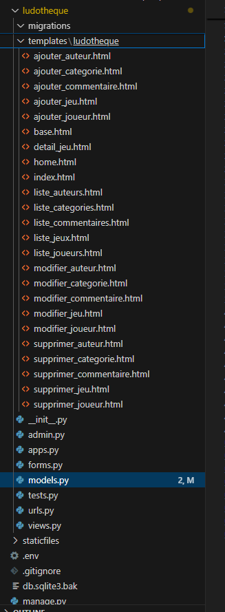
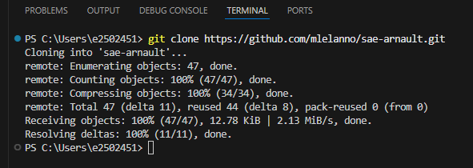
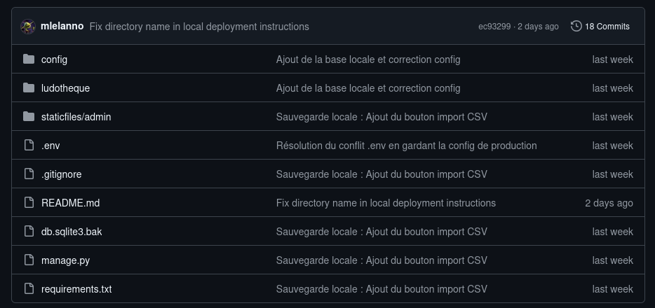

Système d'Information "Ludothèque""Ludothèque" Information System
Le Concept :The Concept: Nous avons construit de A à Z le "cerveau" numérique d'une ludothèque. L'objectif était de livrer une véritable application web dynamique, robuste et sécurisée. We built the digital "brain" of a board game rental company from scratch. The objective was to deliver a truly dynamic, robust, and secure web application.

1. L'Architecture LogicielleSoftware Architecture (Django MVT)
Pour éviter le code difficile à maintenir, nous avons utilisé l'architecture Modèle-Vue-Template du framework Django : To avoid hard-to-maintain code, we used the Model-View-Template architecture of the Django framework:
- Le ModèleThe Model : Dicte la structure stricte des données en base.Dictates the strict structure of database records.
- La VueThe View : Orchestre la logique métier et la sécurité des requêtes.Orchestrates business logic and request security.
- Le TemplateThe Template : L'interface visuelle isolée du moteur.The visual interface isolated from the engine.

2. Architecture HybrideHybrid Architecture (DB)
Le système s'adapte à son environnement : en développement local, il s'appuie sur la légèreté de SQLite3. En production, le code bascule automatiquement sur la puissance de MariaDB, initialisé en ligne de commande :
The system adapts to its environment: in local development, it relies on the lightweight SQLite3. In production, the code automatically switches to the power of MariaDB, initialized via command line:

3. Déploiement : Chaîne LogistiqueDeployment: Supply Chain (CI/CD)
Le code est développé sur GitHub, puis déployé sur une machine virtuelle Debian dédiée. La mise à jour de l'application en production se fait par un simple rapatriement (clone/pull) de notre dépôt Git : The code is developed on GitHub, then deployed on a dedicated Debian virtual machine. The application update in production is done by simply pulling our Git repository:




4. La Forteresse : Sécurité IntégréeThe Fortress: Built-in Security
- Anti-Injections SQL : L'ORM de Django filtre systématiquement les requêtes entrantes.Django's ORM systematically filters incoming requests.
- JetonsTokens CSRF : Ticket cryptographique bloquant toute falsification inter-sites.Cryptographic ticket blocking any cross-site request forgery.
- Isolation des SecretsSecret Isolation : Les identifiants sont stockés dans un fichier
.envnon versionné sur GitHub.Credentials are stored in a.envfile, completely hidden from GitHub.